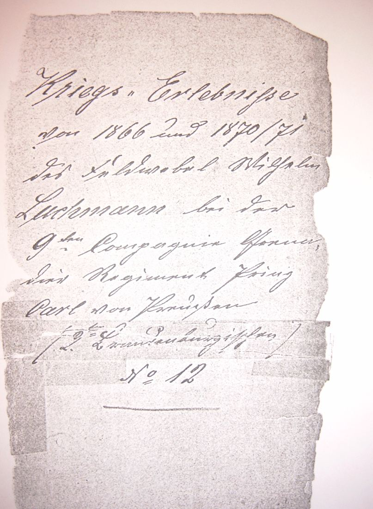

Luchmann stammte aus Luckau in der Niederlausitz, stieg im Regiment vom Grenadier zum Feldwebel auf und wurde nach dem Krieg Bahnbeamter im Saarland. Sein Tagebuch nennt Dutzende Offiziere und Kameraden; viele finden sich in der Regimentsgeschichte wieder.

Friedrich Wilhelm Luchmann wird in Luckau, Kreis Luckau, Regierungsbezirk Frankfurt (Oder), geboren. Den 28. Dezember bestätigt das Tagebuch selbst: In Beaugency feiert er am „4ten Feiertag“ Geburtstag.
T S. 6–7 und 49. Kein Kirchenbuch eingesehen.
Nach einem Aufenthalt in Russland in die 9. Kompanie des Grenadier-Regiments Nr. 12 eingestellt.
Garnison bestätigt (RG S. 294, GenWiki); Eintrittsjahr nur Tagebuch.
Herbst 1865 Exerzier-Gefreiter, in Sachsen 1866/67 Unteroffizier, verpflichtet sich weiter. 1868 Reitlehrgang beim Dragoner-Regiment Nr. 12 in Frankfurt (Oder), 1869 Fourier beim Königsmanöver bei Berlin und Schwimmmeister.
T S. 7 und 17.
Bei Spichern unter den besonders Tapferen genannt und mit dem Eisernen Kreuz II. Klasse ausgezeichnet. Bei Mars-la-Tour führt er die 9. Kompanie und wird umgeritten.
RG S. 442, 450, 466, 469.
Die Aufzeichnungen enden in Le Mans im Januar 1871. Der Titel nennt ihn „Feldwebel“.
T S. 4 und 57.
Rückkehr mit dem Bataillon nach Sorau, Heirat, Ausscheiden aus dem Militär mit Anspruch auf eine Beamtenstelle. Bahnbeamter im Saarland, mit Stationen in Merzig, Saarbrücken, Neunkirchen, Heimbach (Nahe), Stromberg und Völklingen; zuletzt Obergütervorsteher.
Nachwort des Herausgebers der Chronik, S. 62.
Luchmann stirbt in Völklingen (Saar).
Nachwort der Chronik, S. 62. Kein Sterberegister eingesehen.
Das Tagebuch ist ein Selbstzeugnis, Jahre nach den Ereignissen niedergeschrieben. Die Regimentsgeschichte von 1875 ist unabhängig davon entstanden, stützt sich aber auf Meldungen aus dem Regiment, zu denen auch Luchmanns gehört haben können. Schlachtdaten sind zusätzlich mit Wikipedia abgeglichen.
In der Reihenfolge ihres Auftretens. Schreibweise nach der Regimentsgeschichte, abweichende Schreibung des Tagebuchs in Anführungszeichen.
Kompaniechef 1866
Die Regimentsgeschichte nennt Hauptmann v. Schwerin 1866 bei Gitschin und einen Brigadekommandeur v. Schwerin 1870 (Brigadebefehl vom 31.12.1870). Ob es dieselbe Person ist, wurde nicht geprüft.
9. Kompanie
In der Verlustliste der 9. Kompanie steht ein Sekonde-Leutnant Müller. Ob er derselbe ist, bleibt offen.
Kommandeur des Füsilier-Bataillons 1870
Bestätigt: führte das Bataillon bei Spichern und wurde bei Mars-la-Tour tödlich getroffen.
Führer der Fouriere, dann der 9. Kompanie
Bestätigt: Pr.-Lt. Schröder bei Mars-la-Tour durch den Hals getroffen.
Füsilier-Bataillon
Abweichend: Die Regimentsgeschichte nennt ein zerschmettertes Knie; er starb später.
Führer des Füsilier-Bataillons ab 17.08.1870
Bestätigt: übernahm das Bataillon, starb am 18.01.1871 in Parigné, Begräbnis am 20.01.1871 in Le Mans.
12. Kompanie
In der Regimentsgeschichte bei Mars-la-Tour genannt.
Kompaniechef ab Herbst 1870
Bestätigt: führte die 9. Kompanie bei Beaune-la-Rolande, am 11.01.1871 im Oberschenkel verwundet.
Regimentskommandeur ab Oktober 1870
Bestätigt: Kabinettsordre vom 20.10.1870 ernannte ihn zum Kommandeur.
10. Kompanie
In der Regimentsgeschichte bei Parigné genannt. Die Belohnung ist nicht geprüft.
9. Kompanie
Beide in der Verlustliste der 9. Kompanie. Schön zeichnete sich nach der Regimentsgeschichte bei Beaune-la-Rolande aus.
9. Kompanie
Nur im Tagebuch.
Kameraden 1866
Nur im Tagebuch.
Die Seite nennt aus der Familie nur Wilhelm Luchmann und die Herausgeber der Chronik. Die Personen aus dem Tagebuch sind Soldaten des 19. Jahrhunderts.